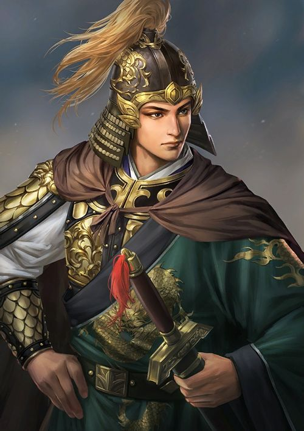

- 김태경
- 한상윤
- 이상민
- 최태성
이상민
이상민 (2001~)
신성 에스타르 대제국
신성 호위부장 -> 신성 친위 제3군단장

루테나 전투(2019)에서 카투시아 제국의 구원병력과 함께 결정적 승리를 도모해 *모국의 파수병 칭호를 부여받았다.
이후 갈라타 산맥을 돌파하는 작전에서 대성공을 거두고 신성연합의 결정적 반격을 이끈 인물로 평가된다.
*모국의 파수병 칭호는 대신성 전쟁이 끝난 후 3명의 군단장에게 수여된 칭호로 대신성 전쟁 중 가장 영광스러운 칭호로 알려져있다.